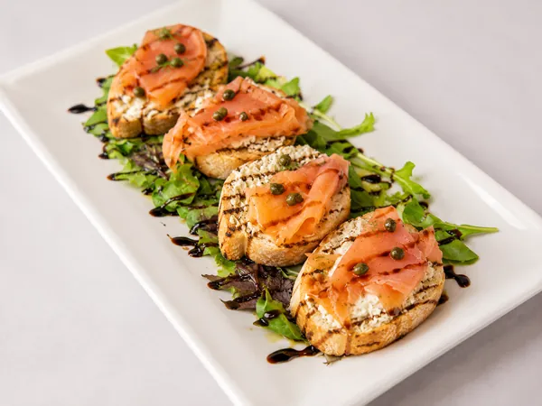
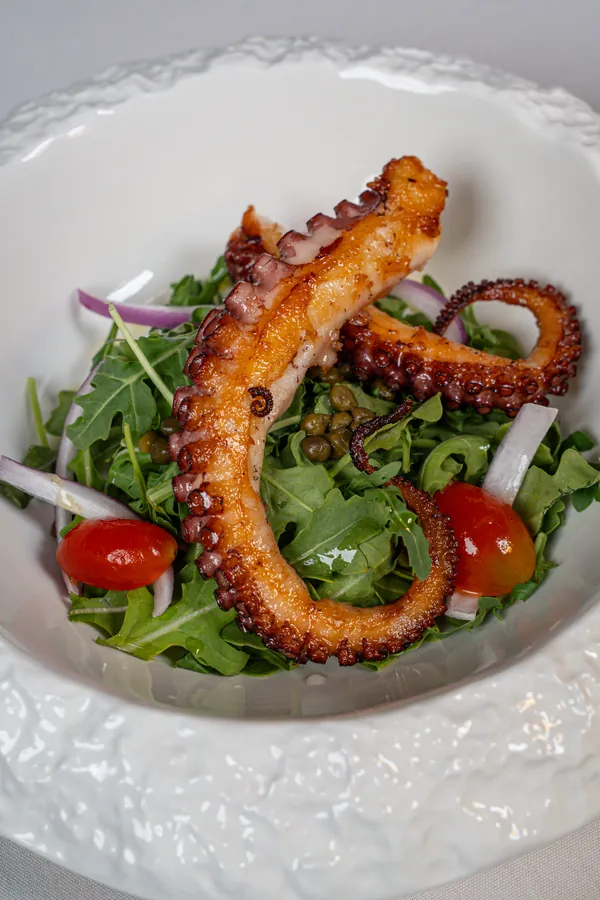
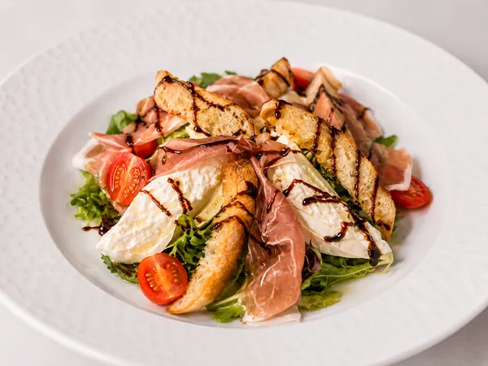
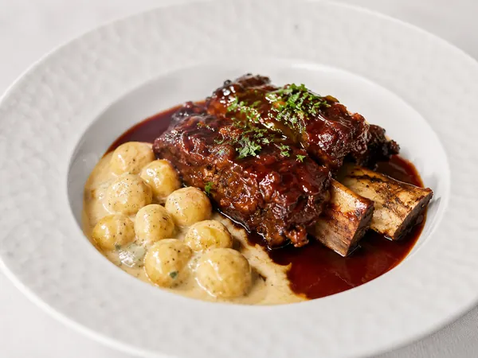
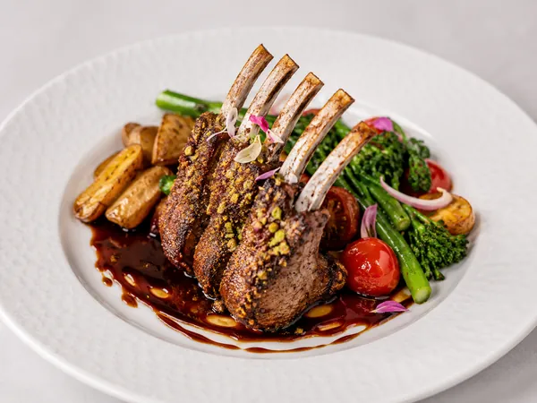
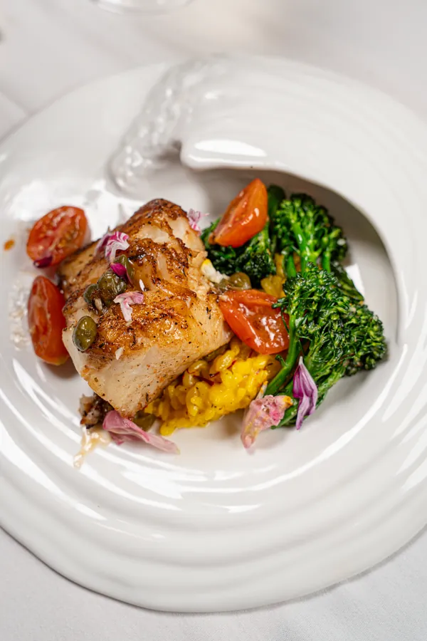
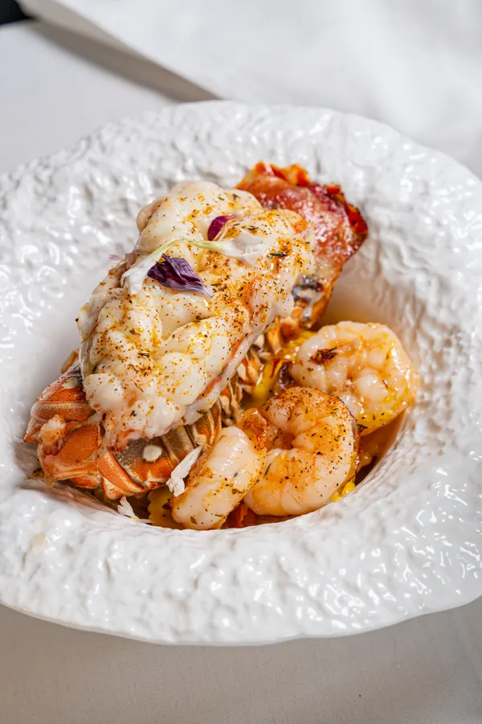

Smoked Salmon Bruschetta
Toasted ciabatta topped with sliced smoked salmon and our signature house-made pesto of artichokes, capers, anchovies, garlic, basil, lemon juice, mayonnaise, and extra virgin olive oil.
Specials

Toasted ciabatta topped with sliced smoked salmon and our signature house-made pesto of artichokes, capers, anchovies, garlic, basil, lemon juice, mayonnaise, and extra virgin olive oil.

Grilled octopus salad on a bed of arugula with cherry tomatoes, lemon, olive oil, and a touch of chili.

Fresh spring mix with ripe tomatoes and creamy burrata cheese, finished with balsamic glaze and served with toasted bruschetta bread.

Slow-braised for six hours in a Barolo wine reduction, served with truffle-stuffed gnocchi.

Five pistachio-crusted lamb chops finished with a Barolo wine reduction and served with vegetables and potatoes.

8 oz. Chilean seabass, saffron risotto with seasonal vegetables, and jumbo prawns.

Lobster-stuffed ravioli finished with a saffron cream sauce, served with an 8 oz. lobster tail and four jumbo prawns.
Melon vodka, cranberry juice, and elderflower liqueur shaken and served over ice. Light, floral, and refreshing.
Acai blueberry vodka, watermelon, pineapple, citrus, and strawberry. Bright, fruity, and made for summer.
A refreshing blend of acai blueberry vodka, lemon, fresh mint, and prosecco with a vibrant summer finish.
Bergamot and elderflower liqueur with fresh lemon. Elegant, citrus-forward, and smooth.
Bourbon, Campari, and sweet vermouth stirred over ice with an orange twist. Bold, balanced, and timeless.